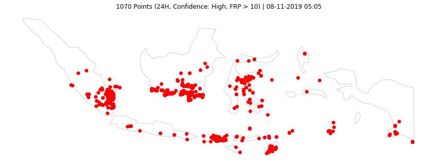
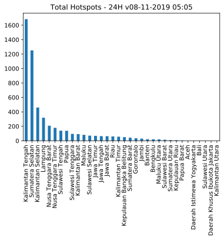
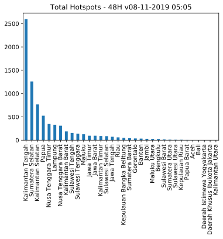

Last updated: 08-11-2019 05:05
Data VIIRS (NASA FIRMS)
Titik Api @Indonesia
5392 (24H) | 7713 (48H) | 13472 (7D)
Olah Data dan Visualisasi Sebaran Titik Api di Indonesia.
Acq. Date: 06-11-2019 11:12 -- 08-11-2019 01:18 WIB (24H) | 05-11-2019 11:30 -- 08-11-2019 01:18 WIB (48H) | 01-11-2019 00:06 -- 08-11-2019 01:18 WIB (7D)
Home Top 3 GitHub Sumatera Kalimantan Sulawesi Maluku & Papua Jawa Bali & NT

Data 24H
| Kategori | #Titik |
|---|---|
| Confidence High | 182 |
| Confidence Nominal | 4833 |
| Confidence Low | 377 |
| Total | 5392 |
| Confidence High or FRP>10 | 1070 |
Data 48H
| Kategori | #Titik |
|---|---|
| Confidence High | 271 |
| Confidence Nominal | 6952 |
| Confidence Low | 490 |
| Total | 7713 |
| Confidence High or FRP>10 | 1647 |
Data 24H
| # | Provinsi | Total | H | N | L | HFRP10 |
|---|---|---|---|---|---|---|
| 1 | Kalimantan Tengah | 1683 | 37 | 1474 | 172 | 348 |
| 2 | Sumatera Selatan | 1251 | 59 | 1185 | 7 | 267 |
| 3 | Kalimantan Selatan | 460 | 3 | 391 | 66 | 98 |
| 4 | Lampung | 319 | 21 | 293 | 5 | 67 |
| 5 | Nusa Tenggara Barat | 208 | 3 | 176 | 29 | 66 |
| 6 | Nusa Tenggara Timur | 179 | 8 | 163 | 8 | 35 |
| 7 | Sulawesi Tengah | 139 | 11 | 126 | 2 | 34 |
| 8 | Papua | 138 | 3 | 135 | 0 | 21 |
| 9 | Sulawesi Tenggara | 95 | 8 | 87 | 0 | 20 |
| 10 | Kalimantan Barat | 92 | 1 | 87 | 4 | 14 |
Data 48H
| # | Provinsi | Total | H | N | L | HFRP10 |
|---|---|---|---|---|---|---|
| 1 | Kalimantan Tengah | 2597 | 70 | 2339 | 188 | 599 |
| 2 | Sumatera Selatan | 1258 | 59 | 1187 | 12 | 269 |
| 3 | Kalimantan Selatan | 767 | 13 | 681 | 73 | 160 |
| 4 | Papua | 525 | 8 | 491 | 26 | 164 |
| 5 | Nusa Tenggara Timur | 347 | 29 | 309 | 9 | 72 |
| 6 | Lampung | 331 | 21 | 303 | 7 | 67 |
| 7 | Nusa Tenggara Barat | 310 | 14 | 266 | 30 | 87 |
| 8 | Kalimantan Barat | 188 | 3 | 173 | 12 | 45 |
| 9 | Sulawesi Tengah | 156 | 11 | 143 | 2 | 35 |
| 10 | Sulawesi Tenggara | 138 | 10 | 128 | 0 | 28 |
Data 24H

Data 48H
